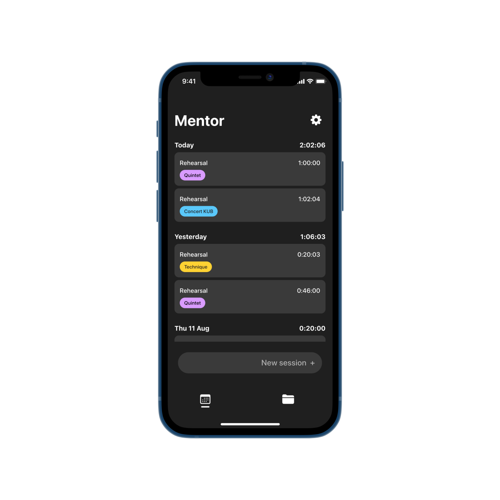
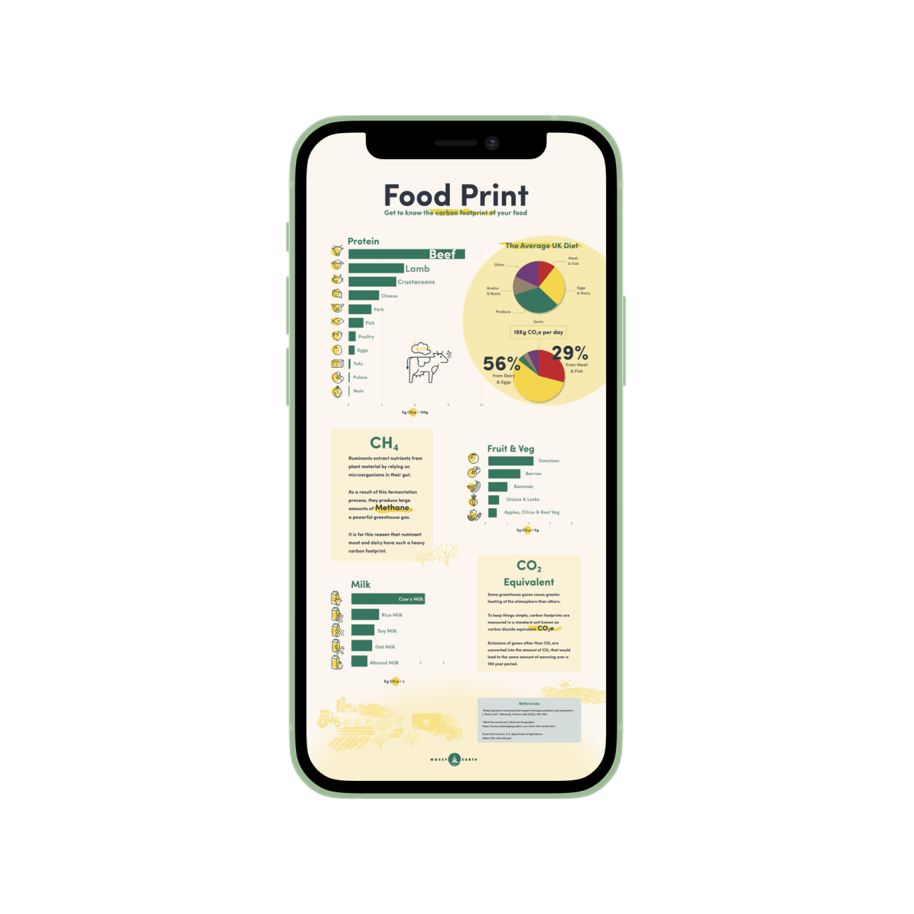

Product designer and learner to things. I love creating experiences that positively impact people’s lives.
I work best in a problem solving mindset, considering all different aspects of a problem and coming up with creative solutions. I’m always looking for opportunities to learn new skills that complement my main design development.

